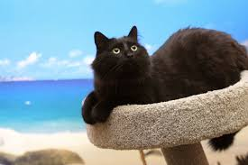

Descrierea aplicatiei
Compozitie:
2 zone: zona publica, zona privata
Zona publica:
1. se compune din postarile utilizatorilor.
2. o postare va fi compusa din: numele utilizatorului, un slide-show(carusel), buton de subscribe.
3. -butonul de subscribe inregistreaza utilizatorul de la care vrei sa primesti noutati;
-cand utilizatorul la care te-ai abonat adauga in zona publica o postare, vei primi o notificare cu acea postare;
-la click pe notificare vei fi redirectionat la locul unde se afla postarea(scroll direct la postare).
Zona privata:
(sau zona in care fiecare utilizator creaza o postare)
1. slide-show-ul/caruselul se creeaza in felul urmator:
-se adauga mai multe poze cu tag-uri, tag-urile reprezentand obiecte din poza
-de exemplu: o poza care contine o pisica pe plaja va avea ca si tag-uri pisica, plaja.
-din multitudinea de poze adaugate de utilizator, se vor selecta cateva/toate pozele in functie de cea mai buna varianta a show-ului.
-aceasta varianta se compune din rearanjarea pozelor dupa tag-uri, astfel incat daca exista de exemplu 2 poze(poza 1 cu tag-urile: pisica, plaja, soare; poza 2 cu tag-urile: pisica, campie, soare), vor fi puse una langa alta.

2. Show-ul cel mai spectaculos va fi determinat de numarul de tag-uri comune din cele 2 poze alaturate. Pot fi oricate poze, algoritmul va decide daca le adauga in show sau nu.
3. buton pentru a publica rezultatul: creatia ajunge in zona publica.